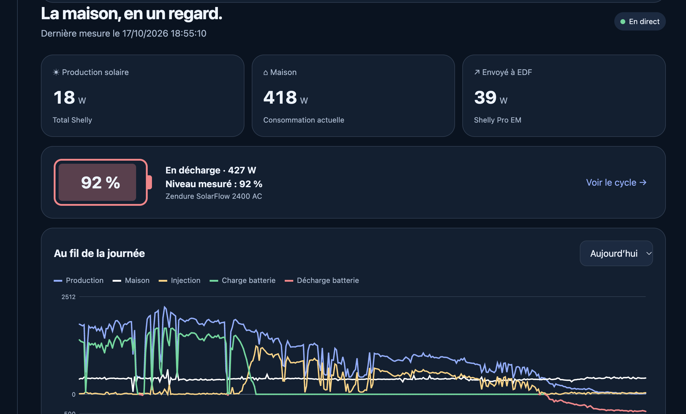
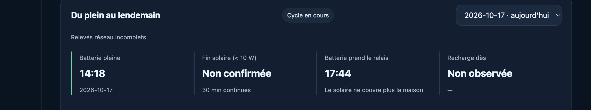

Suivi local DTU Pro-S
Lecture en Wi-Fi direct ou Modbus TCP ; contrôle externe possible après activation Remote Control / Modbus.
SUIVI SOLAIRE LOCAL · SANS CLOUD OBLIGATOIRE
Boîte noire Hoymiles rassemble la production, la maison, la batterie et le réseau EDF dans un tableau privé. Choisissez uniquement les équipements que vous possédez : le logiciel s’adapte à votre installation.
UNE VUE FIABLE DE L’INSTALLATION
Le logiciel rend lisibles les données qui comptent : production DTU, indication DDSU666, soutirage Linky & Denky D4 et flux réseau signé mesuré indépendamment par le Shelly.
Une hiérarchie claire des mesures : le Shelly mesure localement les flux instantanés achat/injection et le Denky D4 lit les index Linky HP/HC. Ces sources locales sont prioritaires pour le tableau et le budget. Les exports S‑Miles/Hoymiles peuvent compléter un historique antérieur, mais restent affichés séparément. Si le relevé EDF officiel diffère, il est conservé comme référence de facturation : aucune estimation Hoymiles ne l’écrase.
Lecture en Wi-Fi direct ou Modbus TCP ; contrôle externe possible après activation Remote Control / Modbus.
Puissance instantanée et index heures pleines / heures creuses par Téléinfo.
Deux voies optionnelles pour comparer la production et mesurer l’achat ou l’injection au réseau.
Alerte temporisée, cumul Wh/kWh, journal CSV et résumé texte pour le support Hoymiles.
Production, consommation, injection et état des appareils depuis le Wi-Fi local ou à distance avec Tailscale.
EDF séparé du solaire et de la batterie : HP, HC, abonnement, injection et économies mesurées.
DE L’ÉNERGIE AUX EUROS
Le budget mensuel distingue l’achat EDF — heures pleines, heures creuses et abonnement — de l’énergie apportée localement par le solaire et la batterie. L’injection et son cumul restent séparés : ils ne sont pas présentés comme une économie sans tarif de rachat configuré.
Les économies affichées reposent sur les kWh mesurés et les tarifs HP / HC renseignés. En cas de trou de mesure ou d’index Linky absent, le logiciel affiche une donnée indisponible plutôt qu’un montant inventé.
PILOTAGE DU SURPLUS : LOCAL ET OPTIONNEL
Le tableau mesure indépendamment la production, l’achat et l’injection. La régulation locale est facultative et garde les dernières consignes dès qu’une mesure devient absente ou ancienne.
Une limite Hoymiles/DDSU active est une commande réelle, même réglée à 0,10 kW ou 1 kW. Ne la combinez jamais avec un contrôleur externe.
DISPONIBLE SUR VOS ÉCRANS
Le Raspberry Pi est recommandé pour assurer la collecte et l’enregistrement permanent. Android et iPhone affichent la même interface depuis le navigateur, sur le Wi-Fi local ou à distance avec Tailscale. Windows et macOS restent possibles, mais un seul collecteur doit être actif à la fois.
Important : si le Raspberry est en service, ne cochez pas les ESP32 ni la gestion solaire dans le logiciel classique Mac/Windows. Les ESP32 restent allumés pour le Raspberry ; le Mac ou le PC doit seulement ouvrir son tableau web.
Application complète, installation locale, historique et démarrage automatique facultatif.
Installateur autonome, sauvegarde des données avant mise à jour et fonctionnement sur le réseau local.
Collecteur permanent par service systemd, tableau web privé et accès Tailscale, sans ordinateur laissé allumé.
Dans Chrome, sur le Wi-Fi de la maison sans Tailscale ; depuis tout autre lieu, accès privé avec Tailscale. Ajout possible à l’écran d’accueil.
Dans Safari, sur le Wi-Fi de la maison sans Tailscale ; depuis tout autre lieu, accès privé avec Tailscale. Ajout possible à l’écran d’accueil.
ALARMES DU SUIVI LOCAL ET À DISTANCE AVEC TAILSCALE
Après cinq minutes sans mesure valide enregistrée, le logiciel affiche une alarme. Le tableau mobile ouvert signale aussi une perte de connexion, sur le Wi-Fi ou via Tailscale. Une production à 0 W pendant la nuit reste une mesure normale.
Pour être averti même ordinateur éteint ou téléphone verrouillé, configurez une notification extérieure par mail avec Healthchecks. Les interruptions et reprises sont enregistrées localement.
SUIVI, BILAN ET ÉCONOMIES
Du direct au bilan complet : production, réseau, coût EDF, abonnement, batterie et économies locales restent lisibles, source par source.

Les captures « Bilan complet » et « Budget EDF » illustrent la séparation entre l’énergie achetée, le solaire, la batterie et l’abonnement. Les montants affichés sont des exemples anonymisés.
SECOND ENSEMBLE SOLAIRE · ESP32
Un second ensemble de panneaux, indépendant du DTU Pro-S principal, peut être suivi grâce à une liaison complémentaire ESP32. Le Raspberry rassemble ses données dans le même tableau privé.
Le routeur ESP32 apporte le Wi-Fi jusqu’au local technique. Le proxy ESP32 placé près des micro-onduleurs assure leur liaison Bluetooth. Le tableau indique séparément l’état des deux liaisons.
DTU PRO-S · DEUX LIAISONS LOCALES
Le Raspberry Pi garde une Alfa dédiée au Wi-Fi local du DTU. Une seconde Alfa assure séparément la liaison Wi-Fi vers le cabanon solaire et ses ESP32. Ces deux chemins restent indépendants du réseau domestique.
Le DTU est relié en Ethernet au nano-routeur TP-Link configuré en Client/Pont ; Modbus TCP permet alors la lecture locale des quatre entrées PV. Le tableau affiche les six panneaux individuellement, sans dépendre du cloud.
INSTALLATION WINDOWS, MAC ET RASPBERRY PI
Pour un suivi permanent, installez le collecteur sur Raspberry Pi : les ordinateurs et téléphones ouvrent ensuite son tableau privé.
bash raspberry-pi/INSTALLER_RASPBERRY.sh. Le paquet n’inclut ni adresse IP, ni mot de passe, ni historique.INSTALLER_WINDOWS.vbs.1 - INSTALLER BOITE NOIRE HOYMILES.app et 2 - LIRE-MOI-MAC.txt. Faites un clic droit sur l’installateur puis choisissez Ouvrir.ANDROID, iOS, macOS, WINDOWS ET TAILSCALE
Le Raspberry Pi héberge le tableau privé. À la maison, tout appareil connecté au Wi-Fi local peut l’ouvrir sans Tailscale. Depuis tout autre lieu, Chrome (Android), Safari (iPhone/iPad), Safari/Chrome (Mac) ou Edge/Chrome (Windows) nécessitent Tailscale pour un accès privé et chiffré.
8765. Ne lancez pas en parallèle la gestion solaire sur Mac ou Windows. Dans leur logiciel classique, laissez aussi les deux ESP32 décochés : ils restent réservés au Raspberry.http://IP_DU_RASPBERRY:8765/ sur le Wi-Fi local.http://IP_TAILSCALE_DU_RASPBERRY:8765/, puis ajoutez la page à l’écran d’accueil Android ou iPhone. Sur Raspberry, obtenez l’adresse avec tailscale ip -4. Aucun port de la box ni service public Funnel n’est nécessaire.Le tableau indique l’âge et la provenance de chaque mesure. N’ouvrez aucun port sur la box, n’utilisez pas Tailscale Funnel, activez la double authentification du compte Tailscale et protégez les ESP32 en WPA2/WPA3. Sur téléphone, Windscribe peut remplacer temporairement Tailscale : coupez Windscribe puis réactivez Tailscale si l’accès privé ne revient pas automatiquement.
SOUTENIR LE PROJET
Si cette application vous est utile et que vous souhaitez soutenir les heures de développement et de tests, un don est possible, sans aucune obligation.
Soutenir le projet via PayPalDTU + DENKY D4 + SHELLY : DEUX OPTIONS RÉSEAU
Le Wi-Fi interne relie le PC à la box, au Denky D4 et au Shelly. Une seconde antenne Wi-Fi relie le PC au Wi-Fi propre du DTU.
Le DTU rejoint la box par un nano-routeur en mode Client/Pont ; Denky D4 et Shelly restent sur le même LAN. C’est l’unique configuration proposée sur Mac.
Le TP-Link TL-WR802N suffit largement pour le faible débit du DTU : mode Client/Pont, un port Ethernet et alimentation USB. Son prix se situe généralement autour de 25 à 35 €. Choisissez Client puis Smart IP (DHCP) afin de laisser la box attribuer les adresses.
Le TP-Link TL-WR902AC ajoute le Wi-Fi 5 GHz, mais il est plus cher et n’apporte aucun gain nécessaire au DTU. Il peut être choisi si le réseau 2,4 GHz est très encombré.
Ces modèles sont des suggestions techniques indépendantes : le projet n’est pas affilié à TP-Link et ne reçoit aucune commission.
BILAN EDF
Le calcul HP, HC et abonnement s’appuie sur les index Linky & Denky D4, et non sur le DDSU.

QUESTIONS ESSENTIELLES
La régulation locale est optionnelle et doit être validée sur votre propre matériel avec des mesures réseau fiables. Elle ne commande ni la batterie Zendure ni les relais Shelly. N’activez jamais simultanément la gestion des exportations Hoymiles/DDSU et un contrôleur externe.
Le DDSU est utile pour le système Hoymiles mais peut différer du compteur. Le Linky & Denky D4 sont la référence retenue pour suivre les achats EDF.
Non. Les historiques, réglages et exports restent locaux sur votre ordinateur. GitHub sert uniquement à diffuser le logiciel.
UNE INSTALLATION À LA FOIS
Le projet n’exige pas l’installation complète présentée dans les captures. Dans Équipements, activez uniquement les appareils présents chez vous. Un équipement absent n’est pas une erreur ; une mesure indisponible reste signalée sans être remplacée par une estimation.
Suivi de la production et, lorsque la liaison le permet, lecture individuelle des entrées PV.
Index, heures pleines / creuses et référence pour le bilan d’achat EDF.
Mesure locale indépendante de la production et du flux réseau, même sans Linky.
Niveau, charge, décharge et historique de cycle lorsque la batterie est connectée.
Extension possible pour une seconde installation, sans imposer ce matériel aux autres utilisateurs.
Intégration locale en lecture seule disponible : production, maison, EDF, batterie et état du DTU, sans commande sur les équipements.
Les notes de version et le détail des évolutions sont consultables dans le dépôt GitHub.